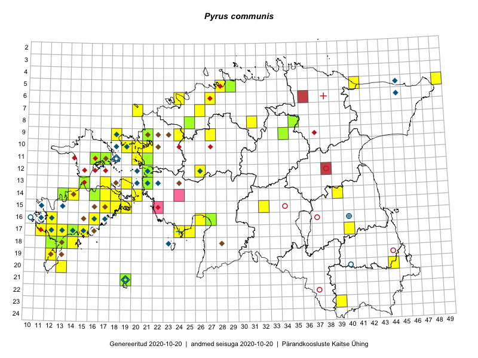

Pyrus communis — harilik pirnipuu
Rosaceae :: Pyrus communis L. (139)

Kaart põhineb 172 kirjel:
vaatlusi 102
herbaareksemplare 37
PKÜ kirjeid1 30
ELFi kirjeid2 3
Taime kaasaegsed ja ajaloolised leiukohad asuvad 82 ruudus.
Tingmärgid ja ruutude arvud periooditi (U3 / V4 )
█ 2006–2020 (58/–)
◆/◇ 1971–2005 (36/44)
○ 1921–1970 (5/5)
+ kuni 1920 (2/1)
× hävinud (–/0)
? kaheldav (–/0)
| Ruut | Leidja(d) | Leiuaeg | Kirje |
|---|---|---|---|
| 12-21 | 2008-07-01–2008-07-01T09:00Z | ruut/ala: Pyrus communis L. | |
| 17-40 | Margus Ots, Sigrid Ots, Ekke Rikka | 2018-06-16–2018-06-16T14:00:00Z | ruut/ala: Pyrus communis L. |
| 05-28 | Leida Ojasoo | 2020-06-06 | ruut/ala: Pyrus communis L. |
| 11-18 | Haide-Ene Rebassoo | 1957–1984 | ruut/ala: Pyrus communis L. |
| 12-21 | H. Krall | 1980-06–1980-07 | ruut/ala: Pyrus communis L. |
| 16-40 | Linda Viljasoo, Maret Kask, A. Remmel | 1947–1981 | ruut/ala: Pyrus communis L. |
| 13-22 | H. Krall, N. Ingerpuu, M. Leht | 1986-06-19 | ruut/ala: Pyrus communis L. |
| 12-20 | 1983-07-13 | ruut/ala: Pyrus communis L. | |
| 15-13 | M. Reitalu | 1991–1999 | ruut/ala: Pyrus communis L. |
| 16-11 | botaaniline ekspeditsioon ZBI | 1974-06 | ruut/ala: Pyrus communis L. |
| 16-11 | Maret Kask, Linda Viljasoo | 1980-08 | ruut/ala: Pyrus communis L. |
| 13-21 | botaaniline ekspeditsioon ZBI | 1983-07-09–1986-06-19 | ruut/ala: Pyrus communis L. |
| 15-11 | M. Kask, L. Viljasoo, A. Frey, A. Toomel | 1980-08 | ruut/ala: Pyrus communis L. |
| 16-12 | Mari Reitalu | 1971–2005 | ruut/ala: Pyrus communis L. |
| 16-16 | Liivia Laasimer | 1977-08-26 | ruut/ala: Pyrus communis L. |
| 17-14 | M. Kask, L. Viljasoo | 1983-09-07 | ruut/ala: Pyrus communis L. |
| 17-13 | M. Reitalu | 1990–1998 | ruut/ala: Pyrus communis L. |
| 17-14 | T. Kukk | 1999-07-02–1999-07-03 | ruut/ala: Pyrus communis L. |
| 17-12 | M. Reitalu | 1971 | ruut/ala: Pyrus communis L. |
| 18-23 | TRÜ tudengid | 1973-07-14–1973-07-28 | ruut/ala: Pyrus communis L. |
| 18-23 | TRÜ tudengid | 1973-07-14–1973-07-28 | ruut/ala: Pyrus communis L. |
| 18-23 | TRÜ tudengid | 1973-07-14–1973-07-18 | ruut/ala: Pyrus communis L. |
| 06-45 | Thea Kull, A. Sennikov, Toomas Kukk | 2003-07-09 | ruut/ala: Pyrus communis L. |
| 21-19 | Julius Gröntved | 1929 | ruut/ala: Pyrus communis L. |
| 11-18 | H.-E. Rebassoo | 1979-06-23–1980-08-25 | ruut/ala: Pyrus communis L. |
| 13-20 | H.-E. Rebassoo | 1973-06-19 | ruut/ala: Pyrus communis L. |
| 16-10 | Haide-Ene Rebassoo | 1960-08-26 | ruut/ala: Pyrus communis L. |
| 05-45 | Linda Viljasoo, V. Meriste | 1972-08 | ruut/ala: Pyrus communis L. |
| 10-18 | Toomas Kukk, Elle Roosaluste | 1993-08-25–1996-07-17 | ruut/ala: Pyrus communis L. |
| 09-18 | Toomas Kukk, Elle Roosaluste, Mare Leis | 1993-08-25–1998-09-21 | ruut/ala: Pyrus communis L. |
| 09-18 | Toomas Kukk, Elle Roosaluste, Mare Leis | 1993-08-24–1998-09-21 | ruut/ala: Pyrus communis L. |
| 10-19 | Toomas Kukk, Elle Roosaluste, Mare Leis | 1993-06–1998-09-21 | ruut/ala: Pyrus communis L. |
| 05-49 | Tiit Hallikma, Toomas Kukk | 2015-07-22 | ruut/ala: Pyrus communis L. |
| 05-49 | Tiit Hallikma, Toomas Kukk | 2015-07-22 | ruut/ala: Pyrus communis L. |
| 17-12 | Toomas Kukk, Mari Reitalu | 2014-06-20 | ruut/ala: Pyrus communis L. |
| 12-21 | Tiit Hallikma, Toomas Kukk | 2015-08-27 | ruut/ala: Pyrus communis L. |
| 14-39 | Eeva-Maria Jeletsky, Tarmo Niitla | 2015-05-03 | ruut/ala: Pyrus communis L. |
| 11-16 | Eeva-Maria Jeletsky, Tarmo Niitla | 2015-06-22 | ruut/ala: Pyrus communis L. |
| 06-24 | Erkki Otsman, Sergei Smirnov | 2015-05-29 | ruut/ala: Pyrus communis L. |
| 20-13 | Mari Reitalu, Oliver Parrest | 2015-05-26 | ruut/ala: Pyrus communis L. |
| 16-12 | Mari Reitalu | 2015-06-16 | ruut/ala: Pyrus communis L. |
| 18-12 | Mari Reitalu, Sirje Azarov, Oliver Parrest | 2015-08-02 | ruut/ala: Pyrus communis L. |
| 18-13 | Mari Reitalu, Oliver Parrest | 2015-05-27 | ruut/ala: Pyrus communis L. |
| 17-11 | Mari Reitalu, Triin Reitalu | 2015-05-19–2015-05-20 | ruut/ala: Pyrus communis L. |
| 17-11 | Mari Reitalu, Triin Reitalu | 2015-08-05 | ruut/ala: Pyrus communis L. |
| 16-12 | Mari Reitalu | 2015-10-17 | ruut/ala: Pyrus communis L. |
| 18-14 | Mari Reitalu, Triin Reitalu | 2014-07-17–2014-07-18 | ruut/ala: Pyrus communis L. |
| 14-18 | Elle Rajandu | 2015-07-24 | ruut/ala: Pyrus communis L. |
| 13-19 | Kadri Tali | 2015-06-03–2015-07-06 | ruut/ala: Pyrus communis L. |
| 17-11 | Triin Reitalu, Mari Reitalu | 2015-08-05 | ruut/ala: Pyrus communis L. |
| 17-11 | Triin Reitalu, Mari Reitalu | 2015-05-20 | ruut/ala: Pyrus communis L. |
| 11-21 | Hanna-Eliisa Luts, Tõnu Ploompuu | 2015-08-13 | ruut/ala: Pyrus communis L. |
| 18-13 | Oliver Parrest, Mari Reitalu | 2015-05-27 | ruut/ala: Pyrus communis L. |
| 18-12 | Oliver Parrest, Mari Reitalu, Sirje Azarov | 2015-08-02 | ruut/ala: Pyrus communis L. |
| 11-20 | Hanna-Eliisa Luts, Tõnu Ploompuu | 2015-08-13 | ruut/ala: Pyrus communis L. |
| 12-26 | Tõnu Ploompuu | 2015-06-23 | ruut/ala: Pyrus communis L. |
| 09-24 | Tõnu Ploompuu, Sirje Lagle | 2015-08-18 | ruut/ala: Pyrus communis L. |
| 10-21 | Tõnu Ploompuu | 2015-05-02 | ruut/ala: Pyrus communis L. |
| 15-32 | Toomas Kukk, Liina Oja | 2016-07-21 | ruut/ala: Pyrus communis L. |
| 15-17 | Peedu Saar, Toomas Kukk | 2016-08-13 | ruut/ala: Pyrus communis L. |
| 15-17 | Toomas Kukk, Peedu Saar | 2016-08-13 | ruut/ala: Pyrus communis L. |
| 05-28 | Toomas Kukk, Peedu Saar | 2016-08-03 | ruut/ala: Pyrus communis L. |
| 18-13 | Sirje Azarov, Mari Reitalu | 2016-07-31 | ruut/ala: Pyrus communis L. |
| 10-19 | Rein Kalamees, Liina Oja | 2016-07-07 | ruut/ala: Pyrus communis L. |
| 14-20 | Sirje Azarov, Mari Reitalu | 2016-08-18 | ruut/ala: Pyrus communis L. |
| 12-21 | Rein Kalamees, Liina Oja | 2016-07-08 | ruut/ala: Pyrus communis L. |
| 14-18 | Mari Reitalu, Sirje Azarov | 2016-08-09–2016-08-10 | ruut/ala: Pyrus communis L. |
| 14-20 | Mari Reitalu, Sirje Azarov | 2016-08-17 | ruut/ala: Pyrus communis L. |
| 09-27 | Rein Kalamees, Liina Oja | 2016-07-06 | ruut/ala: Pyrus communis L. |
| 18-13 | Mari Reitalu, Sirje Azarov | 2016-07-31 | ruut/ala: Pyrus communis L. |
| 15-18 | Mari Reitalu, Hannes Pehlak | 2016-08-26 | ruut/ala: Pyrus communis L. |
| 17-24 | Tiit Hallikma, Tõnu Ploompuu | 2016-07-06 | ruut/ala: Pyrus communis L. |
| 17-25 | Tiit Hallikma, Tõnu Ploompuu | 2016-07-06 | ruut/ala: Pyrus communis L. |
| 18-14 | Ott Luuk | 2016-08-30 | ruut/ala: Pyrus communis L. |
| 18-14 | Ott Luuk | 2016-08-30 | ruut/ala: Pyrus communis L. |
| 05-41 | Tiit Hallikma, Tõnu Ploompuu | 2016-07-26 | ruut/ala: Pyrus communis L. |
| 05-41 | Tiit Hallikma, Tõnu Ploompuu | 2016-07-26 | ruut/ala: Pyrus communis L. |
| 08-31 | Peedu Saar, Toivo Sepp | 2016-07-18 | ruut/ala: Pyrus communis L. |
| 17-24 | Tiit Hallikma, Tõnu Ploompuu | 2016-07-06 | ruut/ala: Pyrus communis L. |
| 08-31 | Toivo Sepp, Peedu Saar | 2016-07-18 | ruut/ala: Pyrus communis L. |
| 07-26 | Jaak-Albert Metsoja, Mari Metsoja | 2016-07-04 | ruut/ala: Pyrus communis L. |
| 16-16 | Mari Reitalu | 2006-07-13 | ruut/ala: Pyrus communis L. |
| 18-14 | Mari Reitalu | 2008-09-04 | ruut/ala: Pyrus communis L. |
| 16-16 | Mari Reitalu | 2008-05-23 | ruut/ala: Pyrus communis L. |
| 09-24 | Tõnu Ploompuu, Sirje Lagle | 2015-08-18 | ruut/ala: Pyrus communis L. |
| 16-26 | Indrek Tammekänd | 2016-10-03 | ruut/ala: Pyrus communis L. |
| 11-20 | Hanna-Eliisa Luts, Tõnu Ploompuu | 2015-08-13 | ruut/ala: Pyrus communis L. |
| 18-12 | Mari Reitalu | 2008-06-02 | ruut/ala: Pyrus communis L. |
| 11-21 | Hanna-Eliisa Luts, Tõnu Ploompuu | 2015-08-13 | ruut/ala: Pyrus communis L. |
| 07-20 | Peedu Saar, Elle Roosaluste, Kaili Orav | 2017-05-29–2017-05-30 | ruut/ala: Pyrus communis L. |
| 15-19 | Mari Reitalu, Sirje Azarov, Maris Sepp | 2018-05-23 | ruut/ala: Pyrus communis L. |
| 14-17 | Mari Reitalu, Sirje Azarov | 2018-08-07 | ruut/ala: Pyrus communis L. |
| 17-15 | Mari Reitalu, Sirje Azarov | 2018-08-05 | ruut/ala: Pyrus communis L. |
| 06-27 | Meeli Mesipuu | 2019-06-16 | ruut/ala: Pyrus communis L. |
| 19-12 | Mari Reitalu, Sirje Azarov | 2019-07-11 | ruut/ala: Pyrus communis L. |
| 10-19 | Peedu Saar, Toomas Kukk | 2019-09-18 | ruut/ala: Pyrus communis L. |
| 10-19 | Toomas Kukk, Peedu Saar | 2019-09-18 | ruut/ala: Pyrus communis L. |
| 10-20 | Ott Luuk | 2019-09-18 | ruut/ala: Pyrus communis L. |
| 09-18 | Ott Luuk | 2019-09-17 | ruut/ala: Pyrus communis L. |
| 20-44 | Ott Luuk, Tiit Hallikma | 2019-07-09 | ruut/ala: Pyrus communis L. |
| 20-44 | Ott Luuk, Tiit Hallikma | 2019-07-09 | ruut/ala: Pyrus communis L. |
| 17-14 | Mari Reitalu, Triin Reitalu, Sirje Azarov | 2020-05-26 | ruut/ala: Pyrus communis L. |
| 09-18 | Toomas Kukk | 1998-09-22 | TAA0015089: Pyrus communis L. |
| 09-18 | Toomas Kukk | 1998-09-22 | TAA0015090: Pyrus communis L. |
| 16-17 | Toomas Kukk | 1999-07-21 | TAA0015091: Pyrus communis L. |
| 17-15 | Toomas Kukk | 1998-07-24 | TAA0015094: Pyrus communis L. |
| 17-15 | Toomas Kukk | 1998-07-24 | TAA0015096: Pyrus communis L. |
| 12-21 | Heljo Krall | 1986-08-01 | TAA0015097: Pyrus communis L. |
| 21-19 | J. Elliku | 2006-09-01 | TALL A*S064: Pyrus communis L. |
| 21-19 | Olev Abner | 1997-06-26 | TALL A005393: Pyrus communis L. |
| 13-21 | J.-M. Habicht | 2010-06-16 | TAM0021040: Pyrus communis L. |
| 17-24 | J. Treboux | 1860–1915 | TAM0063817: Pyrus communis L. |
| 16-40 | H. Hiir | 1880-05 | TU302224: Pyrus communis L. |
| 20-40 | L. Pihlapuu | 1949-05-19 | TU302229: Pyrus communis L. |
| 12-21 | Peedu Saar, Ott Luuk | 2015-08-28 | TAA0116584: Pyrus communis L. |
| 09-34 | Jana-Maria Habicht | 2015-07-25 | TAM0117582: Pyrus communis L. |
| 14-16 | Raivo Kalle | 2016-08-04 | TAA0133287: Pyrus communis L. |
| 14-16 | Raivo Kalle | 2016-08-04 | TAA0133288: Pyrus communis L. |
| 12-21 | Toomas Kukk, Tiit Hallikma | 2015-08-25 | TAA0134913: Pyrus communis L. |
| 12-21 | Toomas Kukk, Tiit Hallikma | 2015-08-25 | TAA0134924: Pyrus communis L. |
| 13-15 | Toomas Kukk, Eerik Leibak | 2015-08-10 | TAA0135480: Pyrus communis L. |
| 08-35 | Jana-Maria Habicht | 2015-07-14 | TAM0130410: Pyrus communis L. |
| 14-13 | Toomas Kukk | 2012-07-14 | TAA0112577: Pyrus communis L. |
| 09-21 | Jaak-Albert Metsoja | 2016-07-07 | TAA0134129: Pyrus communis L. |
| 18-12 | Oliver Parrest, Mari Reitalu, Sirje Azarov | 2015-08-02 | TAA0133640: Pyrus communis L. |
| 11-16 | Eeva-Maria Jeletsky, Tarmo Niitla | 2015-06-22 | TAA0119258: Pyrus communis L. |
| 12-21 | Toomas Kukk | 2014-05-15 | TAA0113130: Pyrus communis L. |
| 17-14 | Toomas Kukk | 2014-06-19 | TAA0113513: Pyrus communis L. |
| 21-19 | Oliver Parrest | 2015-05-31 | TAA0140630: Pyrus communis L. |
| 18-13 | Oliver Parrest, Mari Reitalu | 2015-05-27 | TAA0140649: Pyrus communis L. |
| 08-25 | Jaak-Albert Metsoja | 2015-05-31 | TAA0140381: Pyrus communis L. |
| 13-21 | Toomas Kukk, Peedu Saar | 2017-09-06 | TAA0141883: Pyrus communis L. |
| 11-17 | Toomas Kukk, Indrek Tammekänd | 2017-09-11 | TAA0141931: Pyrus communis L. |
| 11-17 | Toomas Kukk, Indrek Tammekänd | 2017-09-11 | TAA0141932: Pyrus communis L. |
| 16-27 | Indrek Tammekänd | 2017-07-18 | TAA0143360: Pyrus communis L. |
| 12-26 | Heinrich Aasamaa | 1988-08-06 | TAM0136352: Pyrus communis L. |
| 11-21 | Toomas Kukk | 2008-07-04 | TAA0115091: Pyrus communis L. |
| 11-21 | Toomas Kukk | 2008-07-04 | TAA0115092: Pyrus communis L. |
| 05-29 | Olev Abner | 2014-10-13 | TALL A011032: Pyrus communis L. |
| 13-18 | Elle Roosaluste, Urmas Tokko | 1990-07–1991-07 | ELF: 1851 |
| 10-19 | Toomas Kukk | 1995-07-14 | ELF: 6380 |
| 14-39 | Raili Hansen, Eva-Stina Kerner | 2010-08-28 | ELF: 15644 |
| 09-21 | 2000-08-22 | PKÜ: 2568 | |
| 18-13 | 1999-08-10 | PKÜ: 1276 | |
| 09-21 | 2000-08-22 | PKÜ: 2569 | |
| 17-16 | 1999-09-22 | PKÜ: 1360 | |
| 15-22 | 2006-07-23 | PKÜ: 13548 | |
| 11-17 | 2000-09-09 | PKÜ: 3892 | |
| 19-12 | 1999-08-11 | PKÜ: 1300 | |
| 09-21 | 2000-08-21 | PKÜ: 2543 | |
| 09-21 | 2000-08-22 | PKÜ: 2570 | |
| 13-24 | 2000-11-05 | PKÜ: 2150 | |
| 19-12 | 1999-08-11 | PKÜ: 1301 | |
| 09-22 | 2000-08-19 | PKÜ: 2539 | |
| 12-21 | 2000-06-14 | PKÜ: 2454 | |
| 10-22 | 1999-11-05 | PKÜ: 1027 | |
| 14-14 | 1999-10-20 | PKÜ: 1259 | |
| 17-16 | 1999-09-22 | PKÜ: 1361 | |
| 09-21 | 2000-10-01 | PKÜ: 2825 | |
| 09-22 | 2000-09-30 | PKÜ: 2784 | |
| 15-18 | 2009-08-12 | PKÜ: 15371 | |
| 15-16 | 2003-08-23 | PKÜ: 11602 | |
| 16-15;18-28 | 2002-08-17 | PKÜ: 9215 | |
| 15-13 | 1999-10-19 | PKÜ: 1221 | |
| 15-17;16-17 | 1999-07-19 | PKÜ: 1438 | |
| 14-24 | 2006-06-07 | PKÜ: 12523 | |
| 19-13 | 1999-06-09 | PKÜ: 1474 | |
| 12-21 | 2005-08-01 | PKÜ: 12129 | |
| 09-22 | 2000-08-18 | PKÜ: 2538 | |
| 14-14 | 1999-10-20 | PKÜ: 1260 | |
| 09-22;09-23 | 1999-08-14 | PKÜ: 369 | |
| 12-21 | 2005-08-04 | PKÜ: 12187 |
Pärandkoosluste Kaitse Ühingu (PKÜ) andmebaas sisaldab inventeeritud koosluste kirjeldusi ja liigiloendeid. Kõige enam on andmeid niidutaimede kohta.↩︎
Eestimaa Looduse Fondi (ELF) andmebaas sisaldab inventeeritud koosluste kirjeldusi ja liigiloendeid. Eriti rohkesti on andmeid märgalade kohta.↩︎
Ruutude arv uue atlase andmekogu järgi. Muuhulgas arvestab vanemat herbaariumi, 2005. aasta atlase välitöölehtedelt uuesti digitaliseeritud andmeid jne. Uue atlase andmekogust pärinevad andmed on kaardile kantud siniste sümbolitega.↩︎
Ruutude arv 2005. aasta atlase (Kukk, T., Kull, T., Eesti taimede levikuatlas. Eesti Maaülikool, Põllumajandus- ja Keskkonnainstituut, Tartu, 2005) järgi. Andmeallikana on kasutatud levik.exe programmi, kus igas ruudus on registreeritud vaid uusim leid. Seetõttu on vanemate perioodide kohta andmed puudulikud. Kasutatud levik.exe andmestikus leidub mõningaid kõrvalekaldeid atlase trükis ilmunud versioonist, sagedamini tarnade ja käpaliste seas. Lisaks leidub selles andmestikus valik liike (peamiselt väheste leidudega tulnuktaimed), mille kaarte trükis ei avaldatud. Vana atlase andmed ruutudest, milles ei ole uue atlase andmekogus leide enne 2006. aastat, on kaardil esitatud punaste sümbolitega. Vana atlase andmetel hävinud ja kaheldavaid leiukohti pole hilisemate (taas)leidude põhjal korrigeeritud.↩︎